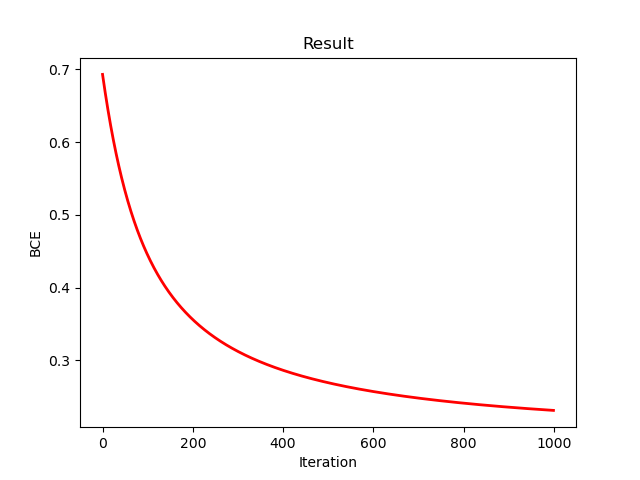
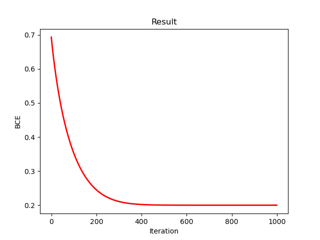

本期内容
- Logistic Regression
- 无约束优化基本方法
- 梯度计算的并行性
- 数值稳定性
- 代码实例
- 拟⽜顿法与L-BFGS
Logictic Regression 简介
在前面的内容里，我们借助分布式计算完成了线性回归的实现。在线性回归中，标签通常是连续变量；而现实生活中，同样存在大量分类问题，这类问题的标签是离散值。针对这种情况，我们引入 Logistic 回归来解决。
预测概率
Logistic 回归预测的是样本属于正类（$Y=1$）的概率：
$$ P(Y=1|x) = p(x) $$由于概率值必须限制在 $(0, 1)$ 区间内，我们需要引入 Sigmoid 函数（Logistic 函数）将线性回归的输出 $x^T\beta$ 映射到该范围。
Sigmoid 函数
$$ p(x) = \sigma(x^T\beta) = \frac{1}{1 + e^{-x^T\beta}} $$该函数不仅将实数映射到 $(0, 1)$，且具有良好的可导性($\sigma(x) = \sigma(x)(1-\sigma(x))$)。
构造似然函数
给定 $n$ 个独立观测样本，利用伯努利分布的性质写出似然函数：
$$ L(\beta) = \prod_{i=1}^n p(x_i)^{y_i} (1-p(x_i))^{1-y_i} $$为了方便优化，取负对数似然（Negative Log-Likelihood, NLL）作为损失函数：
$$ \ell(\beta) = -\sum_{i=1}^n \left[ y_i \ln p(x_i) + (1-y_i) \ln (1-p(x_i)) \right] $$这里提一嘴这个负对数似然函数其实就是二元情况下的交叉熵损失函数。 代入 Sigmoid 函数化简后得到：
$$ \ell(\beta) = \sum_{i=1}^n \left[ -y_i(x_i^T\beta) + \ln(1 + e^{x_i^T\beta}) \right] $$参数估计
我们的目标是找到使损失函数最小的参数 $\hat{\beta}$：
$$ \hat{\beta} = \mathop{\arg\min}_{\beta} \ell(\beta) $$这是一个凸优化问题，但与线性回归不同，它没有显式解（解析解）。因此，必须使用迭代优化算法（如梯度下降法、牛顿法）来求解。
无约束基本优化方法
梯度下降法
核心思想与微分阶数
利用目标函数的一阶导数（梯度）信息。其核心在于沿着目标函数下降最快的方向（即负梯度方向）进行搜索。
更新公式
$$ \beta^{(t+1)} = \beta^{(t)} - \alpha \nabla \ell(\beta^{(t)}) $$其中：
- $\nabla \ell(\beta)$ 是损失函数对 $\beta$ 的一阶导数，即梯度向量。
- $\alpha > 0$ 是学习率（步长）。
特点
单次迭代的计算代价较小，但在寻找最优解的过程中可能需要很多次迭代才能收敛。
牛顿法
核心思想与微分阶数
利用目标函数的二阶导数信息。通过二阶泰勒展开，寻找一个二次曲面的极小值作为下一步的更新点。
更新公式
$$ \beta^{(t+1)} = \beta^{(t)} - \alpha [\nabla^2 \ell(\beta^{(t)})]^{-1} \nabla \ell(\beta^{(t)}) $$其中：
- $\nabla^2 \ell(\beta)$ 是损失函数对 $\beta$ 的二阶导数矩阵，即 Hessian 矩阵。
- $\alpha$ 在初期需要适当调整以防震荡或发散，后期通常可取 $\alpha = 1$。
特点
收敛速度极快（二阶收敛），通常几次迭代即可。但单次迭代需要计算 Hessian 矩阵并求解一个 $p \times p$ 的线性方程组，计算代价较大。
梯度计算的并行性
求导运算的可加性
上一节中，我们利用损失函数的一阶与二阶导数信息来实现参数更新。然而，当样本规模较大时，直接计算整个损失函数的梯度会耗费大量时间。为此，我们计划引入分布式计算，以提升计算效率。
这里需要回顾一些线性代数的内容：求导运算本质上是一种线性映射，可以表示为矩阵形式。基于线性映射的可加性，求导与求和的顺序可以交换。因此，一个自然的思路是：将损失函数拆分为若干部分，分别在各部分上独立计算梯度，最后将结果合并，得到完整的梯度信息。写成数学公式的形式如下：
Logistic回归损失函数梯度的矩阵形式
一阶梯度
之前得到Logistic回归的损失函数如下：
$$ \ell(\beta) = \sum_{i=1}^n \left[ -y_i(x_i^T\beta) + \ln(1 + e^{x_i^T\beta}) \right] $$对求和的每一项求导得：
$$ \nabla \ell_i(\beta) = -y_ix_i + \frac{e^{x_i^T\beta}}{1 + e^{x_i^T\beta}}x_i = -y_ix_i + p_ix_i = (p_i - y_i)x_i $$从而再汇总得到：
$$ \nabla \ell(\beta) = \sum_{i=1}^{n} (p_i - y_i) x_i $$为了方便后续的分布式计算，我们将其写成矩阵形式：
$$ \nabla \ell(\beta) = X^T(p - y) $$二阶梯度
在得到一阶梯度之后，二阶梯度只要对一阶梯度再求一次梯度即可。同样的，我们从求和的每一项入手，得到下列结果：
$$ \nabla^2 \ell_i(\beta) = x_i [\nabla p_i]^T = x_i[p_i(1-p_i)x_i]^T = p_i(1-p_i)x_ix^T_i $$从而再汇总得到：
$$ \nabla^2 \ell(\beta) = X^T W X $$其中$W$是一个对角权重矩阵，满足$W_{ii} = p_i(1-p_i)$.
分布式求解损失函数梯度小结
一阶梯度分布式计算
将大规模数据集 $X$ 按行（观测）切分为 $K$ 个数据块 $X_1, X_2, \dots, X_K$，对应的标签向量切分为 $y_1, y_2, \dots, y_K$。
- 广播：头部节点将当前的参数 $\beta^{(t)}$ 广播给所有的 $K$ 个工作节点。
- Map-1：每个工作节点 $k$ 本地计算自己数据块的概率向量 $p_k = \sigma(X_k \beta^{(t)})$。
- Map-2：每个工作节点 $k$ 本地计算局部梯度 $G_k = X_k^T (p_k - y_k)$。
- Reduce：头部节点将所有 $G_k$ 相加，数学公式如下所示：
二阶梯度分布式计算
同样的切分逻辑也适用于 Hessian 矩阵 $H = X^T W X$
- Map-1：工作节点 $k$ 基于当前 $p_k$ 计算本地的对角权重向量 $$ W_k = p_k \odot (1 - p_k) $$
- Map-2：每个工作节点 $k$ 执行本地的高密度矩阵乘法，计算局部 Hessian 块 $$ H_k = X_k^T W_k X_k $$
- Reduce：全局归约求和： $$ H_{global} = \sum_{k=1}^{K} H_k $$
- 求解：在头部节点解线性方程组 $H_{global}(\Delta \beta) = G_{global}$，完成一次牛顿步更新。
数值稳定性
Sigmoid数值陷阱
在计算Sigmoid函数时，由于涉及到指数项$e^z$，因此当$z$过大时很容易产生指数爆炸，从而使$e^z$超出Python最大数值范围，导致程序崩溃，因此我们需要一种稳定的数值计算方法来计算Sigmoid函数。
解决方案
由之前的定义，Sigmoid函数可写为如下两种形式：
$$ \sigma(z)=\frac{1}{1 + e^{-z}} = \frac{e^z}{1 + e^z} $$我们想要避免由于$e^z$过大造成的数值崩溃问题，只要在$z>0$时选取第一种形式，在$z>0$时选第二种形式即可。 下面给出一段简单的代码实现：
|
|
损失函数数值陷阱
我们之前曾将 Logistic 回归的损失函数从
$$ \ell(\beta) = -\sum_{i=1}^n [y_i \log p(x_i) + (1 - y_i) \log(1 - p(x_i))] $$改写为
$$ \ell(\beta) = \sum_{i=1}^n [-y_i (x_i^T \beta) + f(x_i^T \beta)], $$其中 $p(x) = \sigma(x^T \beta)$，$f(z) = \log(1 + e^z)$。
这是因为 $p(x)$ 可能会非常接近 0 或 1，造成数值的不稳定，产生 $\log(0)$。
前文中$f(z) = \log(1 + e^z)$也叫Softplus函数,是对ReLU函数得近似，主要解决ReLU函数不可导的问题。但是由于Softplus函数中也存在$e^z$，因此也需要解决数值上溢问题。
解决方案
数学技巧：$\log(1 + e^z) = \max(z, 0) + \log(1 + e^{-|z|})$
- 当 $z > 0$ 时，$\log(1 + e^z) =z + \log(1 + e^{-z})$
- 当 $z \le 0$ 时，$\log(1 + e^z) =0 + \log(1 + e^z)$ 下面给出代码实现：
|
|
代码实例
梯度下降法
这里演示使用梯度下降法求解Logistic Regression
导入所需要的库
|
|
生成所需要的数据
|
|
将数据分块上传到共享内存
|
|
定义一阶分布式计算函数
|
|
训练模型
|
|
打印结果
|
|
最终损失函数下降曲线如下所示：

牛顿法
这里导入库，生成数据，上传共享内存的代码同上，故省略。
定义二阶分布式计算函数
|
|
训练模型
|
|
打印结果
|
|
最终损失函数下降曲线如下所示：
